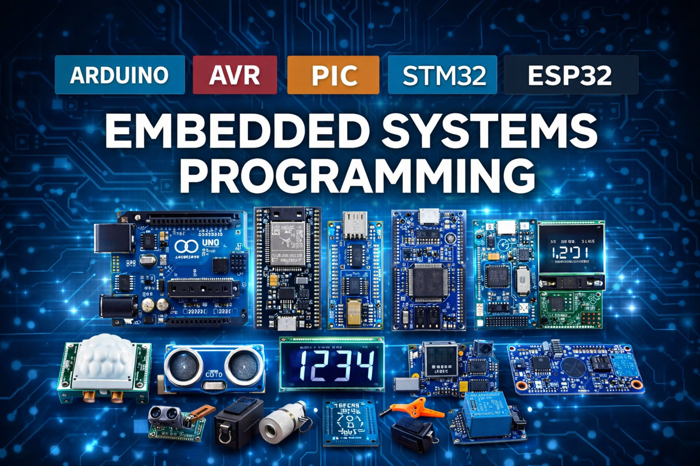

Firmware Development
Embedded C/C++, Assembly, Peripheral Interfacing, Control Logic, Debugging, Optimization, and Firmware Architecture for Custom Boards and Standard Development Platforms.
- MCU Bring-Up and Driver Integration
- Sensor, LCD, and Communication Interfaces
- Real-Time Control and Monitoring Logic